Definición grupos de procesos |
Mediante este formulario se habilita
el mantenimiento y consulta de la tabla que contiene la parametrización
de los diferentes grupos de procesos, conformados por procedimientos con idéntica
periodicidad de ejecución y que funcional o lógicamente, la
entidad acorde con sus criterios, desee hacer concordar; esta secuencialidad
facilita la definición de precedencia tanto a nivel de grupo como de
procesos, dando la posibilidad de priorizarlos e interrelacionarlos y determinar
para cada grupo los procesos específicos que los conforman.
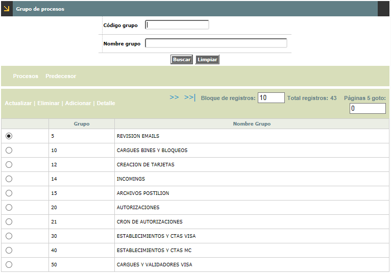
El formulario cuenta con un filtro que le permite al usuario hacer consultas selectivas por el código del grupo y nombre del grupo.
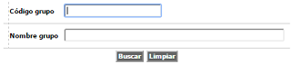
El formulario contiene las opciones Actualizar, Eliminar, Adicionar y Detalle. Cuenta también con el hipervínculo Procesos y Predecesor.
Adicionar: Si el usuario invoca la opción Adicionar se despliega un nuevo formulario.
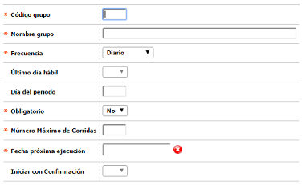
Descripción de campos
Código grupo |
Campo
numérico de cuatro dígitos, obligatorio, en el que se
registra la serie o número que identifica cada uno de los grupos
de procesos. |
Nombre grupo |
En
este campo alfanumérico obligatorio, se registra el nombre o
breve descriptivo que mejor indique el propósito del grupo. |
| Frecuencia | Campo tipo combo obligatorio, del cual se debe seleccionar entre Diario, Semanal, Mensual, Anual, Facturación y Especial, la frecuencia con la cual deben ser ejecutados los procesos del grupo. La combinatoria entre el valor aquí señalado y los valores de los campos Fecha última ejecución, Fecha próxima ejecución, Último día hábil y Día del periodo, determinarán que aparezcan o no dentro de la opción Ejecución de procesos para una fecha determinada. Cuando se selecciona 'Especial', indica que dicho grupo se reflejará en la opción Ejecución de procesos especiales y por allí mismo se podrá ejecutar de forma manual únicamente. |
Ultimo día hábil |
Este campo se activa únicamente cuando la periodicidad seleccionada es semanal, mensual o anual, y contiene un combo con las opciones Si o No para indicarle al sistema si ejecuta dicho grupo de procesos el último día hábil bien sea de la semana, del mes o del año, ó se ejecuta en un día diferente. |
Día del periodo |
Campo
que solamente se activa cuando la periodicidad sea Semanal, Mensual o Anual, y cuando el campo Último día hábil sea NO. En él debe señalarse el número del día
dentro del periodo correspondiente, en que se requiera ejecutar el grupo. |
Obligatorio |
En este campo tipo combo obligatorio se indica Si o No el grupo puede ser obligatorio o no. |
Número Maximo de Corridas |
Campo
obligatorio que determina el numero de ejecuciones parametrizables para el grupo. |
Fecha próxima ejecución |
Campo
obligatorio en formato YYYY-MM-DD en el que se registra, acorde con la periodicidad
y fechas hábiles, la siguiente fecha en que debe ser ejecutado
el grupo. |
Iniciar con confirmación |
Campo en el que se se indica Si o No el grupo puede iniciar su ejecucion con confirmacion por parte del funcionario, esto para poder chequear o hacer algunas validaciones dentro del cierre diario determinadas por el banco. |
Actualizar: si el usuario selecciona un registro e invoca la opción Actualizar se despliega un formulario en el cual el único campo NO modificable es el Código grupo.
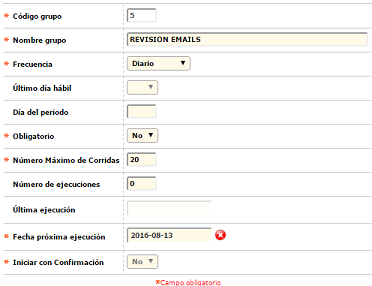
Detalle: si el usuario selecciona un registro e invoca la opción Detalle se despliega un formulario con toda la información del registro y en el cual ninguno de sus campos es modificable.
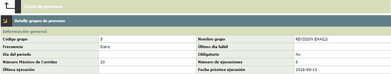
Procesos: Si el usuario invoca el hipervínculo 'Procesos', se despliega un nuevo formulario con el mismo nombre y en el que se registran todos los procesos que componen o integran cada uno de los grupos definidos.
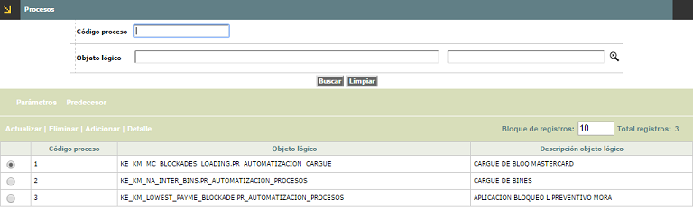
El formulario contiene las opciones Actualizar, Eliminar y Adicionar. También contiene el hipervínculo Parámetros y Predecesor.
Adicionar: Si el usuario invoca la opción Adicionar se despliega un nuevo formulario con los siguientes campos:
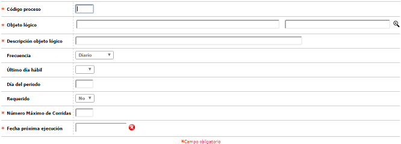
Descripción de campos
Código proceso |
Campos obligatorio de salida en los que se muestra la combinatoria correspondiente al producto para el cual se está parametrizando la condición de no reporte a centrales de riesgo. |
Objeto lógico |
Campo alfanumérico obligatorio en el que se registra el nombre del objeto asociado al proceso a parametrizar. |
Descripción objeto lógico |
En este campo alfanumérico obligatorio, se registra una breve descripción de la función que cumple el proceso a parametrizar. |
Frecuencia |
Campo tipo combo obligatorio, del cual se debe seleccionar entre Diario, Semanal, Mensual, Anual, Facturación y Especial, la frecuencia con la cual deben ser ejecutados los procesos del grupo. La combinatoria entre el valor aquí señalado y los valores de los campos Fecha última ejecución, Fecha próxima ejecución, Último día hábil y Día del periodo, determinarán que aparezcan o no dentro de la opción Ejecución de procesos para una fecha determinada. Cuando se selecciona 'Especial', indica que dicho grupo se reflejará en la opción Ejecución de procesos especiales y por allí mismo se podrá ejecutar de forma manual únicamente. |
Ultimo día hábil |
Este campo se activa únicamente cuando la periodicidad seleccionada es semanal, mensual o anual, y contiene un combo con las opciones Si o No para indicarle al sistema si ejecuta dicho grupo de procesos el último día hábil bien sea de la semana, del mes o del año, ó se ejecuta en un día diferente. |
Día del periodo |
Campo
que solamente se activa cuando la periodicidad sea Semanal, Mensual o Anual, y cuando el campo Último día hábil sea NO. En él debe señalarse el número del día
dentro del periodo correspondiente, en que se requiera ejecutar el grupo. |
Requerido |
En este campo tipo combo obligatorio se indica Si o No el grupo puede ser obligatorio o no. |
Número Maximo de Corridas |
Campo
obligatorio que determina el numero de ejecuciones parametrizables para el grupo. |
Fecha próxima ejecución |
Campo
obligatorio en formato YYYY-MM-DD en el que se registra, acorde con la periodicidad
y fechas hábiles, la siguiente fecha en que debe ser ejecutado
el grupo. |
Actualizar: si el usuario selecciona un registro e invoca la opción Actualizar se despliega un formulario en el cual los campos no modificables son Código proceso, Objeto lógico y Descripción objeto lógico.
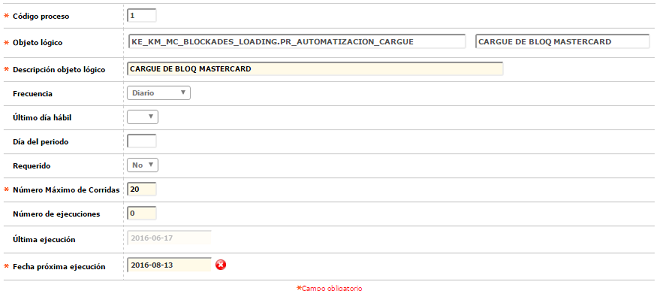
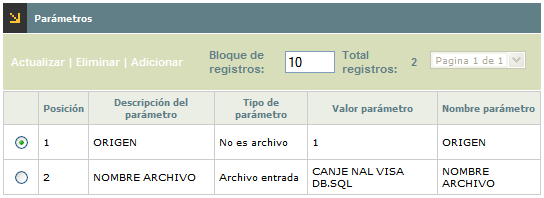
El formulario contiene las opciones Actualizar, Eliminar y Adicionar.
Adicionar: Si el usuario invoca la opción Adicionar se despliega un nuevo formulario.
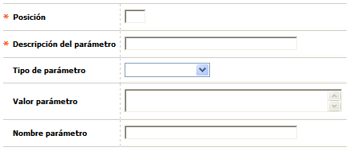
Descripción de campos
Posición |
Campo
numérico de tres dígitos, obligatorio, en el que debe
registrarse el mismo valor asociado al parámetro dentro del
programa. |
Descripción del parámetro |
En este campo alfanumérico obligatorio, se registra una breve descripción del parámetro asociado al proceso. |
Tipo de parámetro |
Campo
tipo combo del cual se puede seleccionar entre Archivo de entrada,
Archivo de salida o No es archivo, la característica propia
del parámetro. |
Valor parámetro |
En
este campo se registra el valor asociado al parámetro dentro
del programa, como por ejemplo el nombre con el cual se va a reconocer un
archivo a cargar. |
Nombre parámetro |
Campo
que aplica para los reportes, y corresponde a parámetros diferentes
al de Empresa, Idioma, Nombre del reporte y Usuario, y que se deben
ubicar dentro del programa. |
Actualizar: si el usuario selecciona un registro e invoca la opción Actualizar se despliega un formulario en el cual el único campo NO modificable es la Posición.
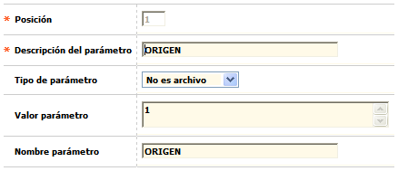
Predecesor:Desde la misma forma es el conjunto de datos que permiten definir los procesos que deben ser ejecutados previamente o como prerrequisito para poder ejecutar un proceso determinado.
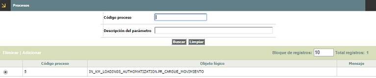
Descripción de campos
Código de proceso |
Contiene el número de la secuencia asociada al objeto lógico de cada proceso definido como predecesor del que se está parametrizando. |
Objeto lógico |
Campos de salida que muestran tanto la secuencia como el nombre del objeto lógico y su descripción, asociados al proceso al que se le están definiendo sus predecesores. |
Mensaje |
Campo
que describe el resultado de la ejecucion. |
Predecesor: Grupo de características que permiten definir relaciones de dependencia para la ejecución entre los diferentes grupos; usualmente se establecen en orden ascendente o de menor a mayor.
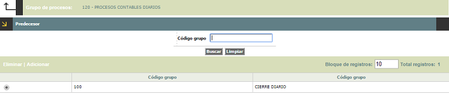
Descripción de campos
Código grupo |
Campo de salida que indica el grupo, al cual se le van a asociar otro(s) grupo(s) como predecesor(es). |
Descripción |
Una vez diligenciado el campo anterior, este espacio se llena automáticamente con la descripción de cada uno de los grupos seleccionados como predecesores. |